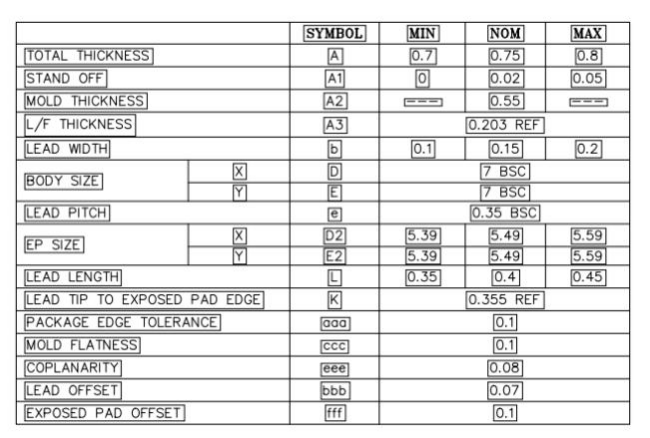
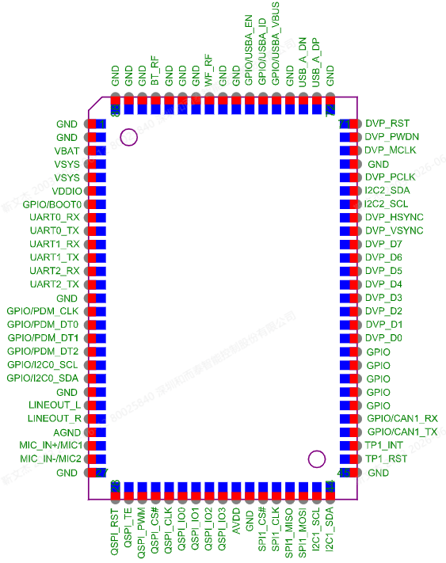

Packages and development boards
X1 offers QFN32 4×4 mm and QFN68 7×7 mm packages, and display, audio, sensor, and communication function verification can be quickly completed through the core board. When selecting, IO quantity, display/camera interfaces, external storage, audio channels, and PCB process should all be considered.
Chip Packaging
Encapsulation |
Size |
Applicable Direction |
|---|---|---|
QFN32 |
4×4 mm |
Wearable and small HMI products with limited space and controllable number of interfaces |
QFN68 |
7×7 mm |
Products that require more GPIO, RGB/DVP, dual-channel audio, or external storage expansion |


The package drawing is used for understanding the structure and pads, and it is not recommended to manually create a production package based on it. The PCB library should use the controlled footprint from the hardware release package, with a focus on checking the central thermal pad, solder mask openings, stencil segmentation, and reflow soldering process.
Core board
The core board centralizes the chip, power supply, clock, and high-risk high-speed devices into a verified module, making it suitable for first completing software functionality and whole-machine interface evaluation.


The S1 core board in the manual brings out common signals such as power, UART, PDM/I2S, I2C, LCD, touch, USB, PWM, QDEC, ADC, etc. S2/S3 or later versions may adjust pins and components, and the software configuration must correspond to the actual board version.
Check before mounting
Check the silkscreen on the board, BOM version, chip package, and the
projects/<project>configuration in the engineering project.Confirm there are no conflicts in the multiplexing groups used by the LCD/CTP, camera, Flash, audio, and sensors.
Debug interfaces, boot pins, and mass production test points should be reserved at the schematic stage and verified before locking safe configurations for mass production.
High-speed display, USB, crystal, and RF networks should follow the reference layout; do not cross partitions, and do not route wires in antenna keep-out zones.
Note
The complete pin multiplexing table is long and will change with package, board, and SDK versions. This manual retains selection and inspection methods; for specific pins, refer to the hardware release package, board-level schematics, and engineering configuration.